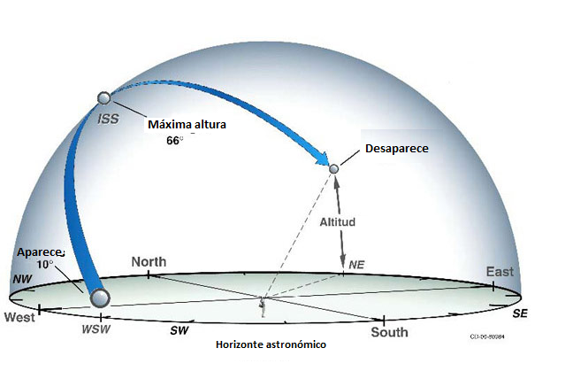

¿Cuándo pasa la EEI por mi cielo?
¡Atentos!
En la madrugada o al anochecer es posible que pase la Estación Espacial Internacional sobre su localidad.
Veamos las circunstancias en la siguiente tabla. Puedes tomar nota e intentarlo.
Visible: indica la duración del avistamiento.
Max Height: Indica la "Altura máxima"; cuanto mayor sea el valor, más alto respecto al horizonte estará la EEI. Cuando pasa sobre tu cabeza está a 90 grados.
Appears: indica la zona donde aparece la EEI. La referencia son los puntos cardinales y el valor es la distancia angular sobre el horizonte.
Disappears: indica cuándo desaparece el avistamiento.

¿Cómo veo la Estación en el cielo? (*)
¿Qué significa toda esta información de avistamiento?
- El dato de fecha y hora indica cuándo comenzará la oportunidad de avistamiento en nuestra zona horaria local. Todos los avistamientos ocurrirán unas pocas horas antes del amanecer o después el atardecer. Este es el período de visualización óptimo, ya que la luz solar se refleja en la Estación Espacial y contrasta con el cielo oscuro.
- La palabra "Visible" señala el período de tiempo máximo que la Estación Espacial Internacional puede verse antes de cruzar de nuevo por debajo del horizonte.
- La altura máxima se mide en grados (también conocida como Elevación). Representa la altura de la Estación Espacial desde el horizonte en el cielo nocturno. El horizonte está a cero grados y, directamente arriba de tu cabeza, la elevación es de noventa grados. Si extiendes el brazo con el puño cerrado sobre el horizonte -como si sostuvieras una taza- verás al puño representando aproximadamente 10 grados de elevación.
- "Aparece" (appears, en inglés) señala la primer ubicación en el cielo donde la Estación será visible. Este valor, como la altura máxima, también se mide en grados desde el horizonte. Las letras representan direcciones de la brújula: N es norte, WNW es oeste por noroeste, y así sucesivamente.
- "Desaparece" representa dónde la Estación Espacial Internacional dejará tu campo de visión y desaparecerá.
(*) Traducido de https://spotthestation.nasa.gov/sightings/view.cfm?country=Uruguay®ion=None&city=Montevideo#